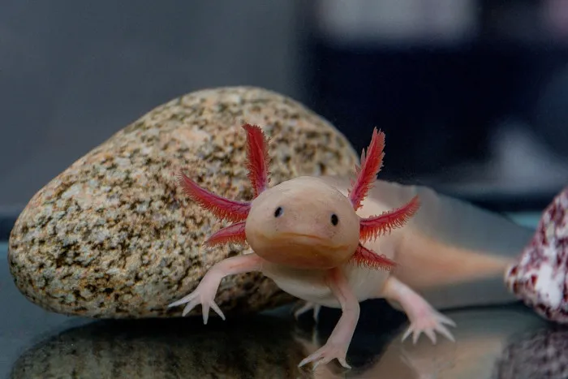

Sobre A Clínica
é uma clínica dedicada ao bem-estar e à saúde dos seus pets. Com uma equipe de veterinários altamente qualificados, oferecemos serviços completos, desde consultas de rotina até tratamentos especializados. Nosso compromisso é garantir que cada animal receba o melhor cuidado possível em um ambiente acolhedor e moderno.
Sobre Espaço
Contamos com uma estrutura completa, incluindo laboratório, centro cirúrgico e atendimento de emergência. Além disso, oferecemos serviços de vacinação, exames laboratoriais, odontologia veterinária e acompanhamento nutricional. Na Vida Animal, tratamos cada paciente como se fosse parte da nossa família, priorizando sempre o conforto e a qualidade de vida dos seus pets. Nosso objetivo é proporcionar uma experiência de atendimento personalizada, com atenção aos detalhes e cuidado contínuo, para garantir que seu amigo de quatro patas tenha uma vida saudável e feliz.
Para Todas Os Pets
Convencionais
 O Bulldog Francês: é uma raça pequena, conhecida por suas orelhas grandes e corpo robusto. Afetuoso e dócil, ele é ótimo para viver em apartamentos e se dá muito bem com famílias. Por ter o focinho achatado, pode ter problemas respiratórios e precisa de cuidados em climas quentes. É uma raça tranquila e não exige muito exercício, sendo ideal para quem busca um companheiro calmo e carinhoso.
O Bulldog Francês: é uma raça pequena, conhecida por suas orelhas grandes e corpo robusto. Afetuoso e dócil, ele é ótimo para viver em apartamentos e se dá muito bem com famílias. Por ter o focinho achatado, pode ter problemas respiratórios e precisa de cuidados em climas quentes. É uma raça tranquila e não exige muito exercício, sendo ideal para quem busca um companheiro calmo e carinhoso.
Não Convencionais

O Ouriço Pigmeu:é um pequeno animal de estimação, conhecido por seus espinhos curtos e comportamento noturno. Originário da África, ele é solitário e prefere ambientes quentes. Com manuseio frequente, pode se tornar dócil. Seu tamanho compacto e hábitos tranquilos fazem dele um bixinho muito carismatico.
Exóticos
O Axolote :é um anfíbio aquático originário do México, conhecido por sua capacidade de regeneração. Ele tem uma aparência única, com brânquias externas em forma de plumas e um sorriso característico. O axolote vive em água doce e permanece em sua forma larval durante toda a vida, o que o diferencia de outros anfíbios. É um animal de fácil cuidado, popular entre entusiastas de pets exóticos devido à sua aparência fascinante e comportamento tranquilo.
Nossos Amigoes
Carambola
Spitz alemão:sofria com falta de folego,assim que feito o tratamento, não para de brincar.
Rufus
Buldog Francês:chegou com muita colica,em dois dia ja estava pulando feliz da vida
Perry
Ouriço pigmeu africano:Sofria de desidratação em um semana ficou totalmente curado.
isaura
Axolete rosa:chegou com ausência de nutrientes,em pouco tempo ficou cheia de energia namorada do joão

João
Axolete preto:chegou fraquinho em poucos dia ja se reestabeleceu,namorado da isaura
Fale Conosco
Redes Sociais
Endereço
Rua dos bixinhos-floresta encantada n-162